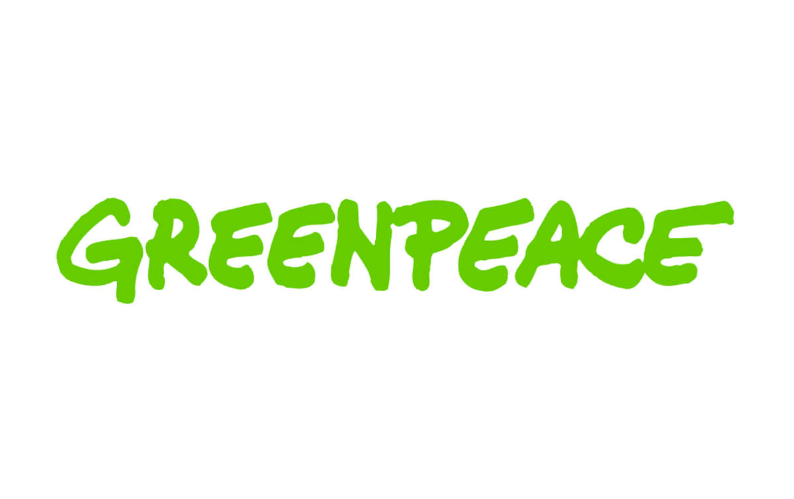
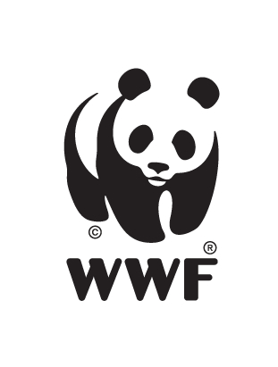
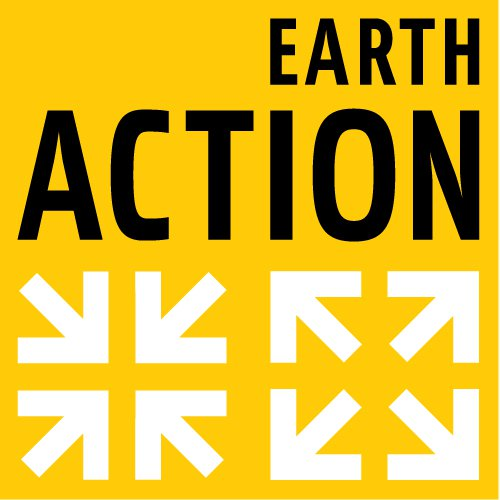

Greenpeace El nombre de esta organización proviene del inglés, green: verde y peace: paz. Es una organización no gubernamental que fue fundada en Vancouver, Canadá, en 1971. Define su objetivo como la protección del medio ambiente y la paz mundial. Es una de las mayores organizaciones ambientalistas independientes del planeta; posee oficinas nacionales e internacionales en 55 países y 32 millones de afiliados que financian todas sus actividades, además de artistas e intelectuales que recaudan fondos como donaciones. Su sede se encuentra en Ámsterdam, Países Bajos. Greenpeace ha hecho intervenciones públicas y protestas por la preservación ambiental, por la preservación del Ártico, por la protección de la biodiversidad, contra el uso de alimentos transgénicos y contra el uso de armas nucleares. https://www.greenpeace.org

World Wildlife Fund (WWF) El nombre de la organización se traduce al español como Fondo Mundial para la Vida Salvaje, pero se emplea el nombre Fondo Mundial para la Naturaleza. Fue fundada en 1961. Es la mayor organización no gubernamental ambientalista del planeta. Funciona en más de 100 países a través de unos 5 millones de voluntarios. Su sede se encuentra en Suiza. Sus objetivos de trabajo son la investigación, la conservación y la restauración ambiental, los cuales plantea a través de la conservación de la diversidad biológica del planeta, la promoción del uso sostenible de los recursos ambientales y de la disminución de la contaminación ambiental y el consumo voraz. El World Wildlife Fund ha desempeñado un papel muy importante en el desarrollo de una conciencia ambientalista en el planeta y en el movimiento conservacionista mundial. Cuenta entre sus socios a la Organización de las Naciones Unidas (ONU), la Comisión Europea, el Banco Mundial y la Unión Internacional para la Conservación de la Naturaleza (UICN), entre otros. https://www.worldwildlife.org/

Earth Action Esta es una red internacional que funciona con la comunicación a través de internet, cuyos objetivos son activar a los ciudadanos, periodistas y activistas de organizaciones protectoras del ambiente, para generar presión pública sobre la toma de decisiones en aspectos ambientales críticos. Existen aproximadamente unas 1800 organizaciones de 144 países, afiliadas a esta organización, que están trabajando en campañas divulgativas sobre cuestiones críticas ambientales, desarrollo sostenible, aspectos sociales y la paz mundial. https://www.earthaction.org/